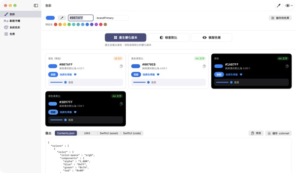
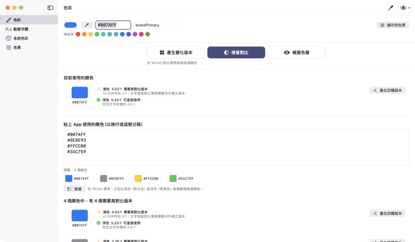
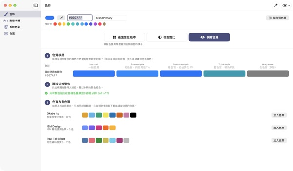
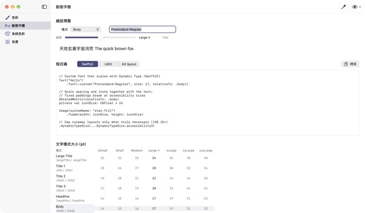

輸入一個顏色
得到四種外觀
系統顏色會跟著深色模式和「增加對比」自動改變，品牌色卻不會。TetraTint 從一個淺色模式的顏色出發，產生淺色、淺色高對比、深色、深色高對比四種版本，直接輸出到 Xcode。
所有功能免費。需要 macOS 14 或以上版本。

放入你的品牌色試試
貼上 hex 值，或點一個預設色。用和 App 一樣的演算法，四種版本與背景對比馬上出來。
品牌色在深色模式下被吃掉過嗎？
在淺色模式挑好的藍色，放到黑底就變得灰濛濛；對開啟「增加對比」的使用者來說，文字也不好讀。每種外觀都要手動找顏色、一個個算對比，半天就沒了。TetraTint 依照系統顏色在不同外觀間的變化方式產生版本，並當場告訴你每一種有沒有達標。
一次檢查所有正在用的顏色
把 App 裡用到的 hex 清單整段貼上，它會逐一判斷：可直接使用、需要高對比版本，或僅限裝飾用途。
有問題的顏色按一下就能產生四種版本並存進調色盤。準備 App Store 輔助使用標示中的「足夠的對比」時也能直接派上用場。

用色覺障礙者的眼睛來看
模擬調色盤在紅色盲、綠色盲、藍色盲和灰階下的樣子，並對變得難以分辨的顏色組合提出警告。
一鍵匯入 Okabe–Ito、IBM、Paul Tol 色盲友善調色盤；也能按右上角的眼睛按鈕，用這種視角預覽整個 App 畫面。

自訂字體也能跟著文字大小走
查看 11 種文字樣式在 7 個大小級距的對照表，拖動滑桿就能預覽實際大小。
輸入字體的 PostScript 名稱，就會產生 UIKit、SwiftUI、@ScaledMetric 程式碼，以及在大字級時切換版面的程式碼。

三個步驟就能開始
- 1
輸入基準色
貼上 hex、用滴管在螢幕任何地方取色，或選一個預設色。
- 2
檢查四種版本
看徽章確認對比，和品牌調性不合的版本用顏色選擇器調整。
- 3
輸出到 Xcode
以 Contents.json、.colorset、UIKit 或 SwiftUI 程式碼拷貝或儲存。
版本的產生規則與徽章意義
- 淺色（預設）
- 維持你輸入的顏色
- 淺色高對比
- 稍微提高彩度，再調暗到在白底達到 4.5:1
- 深色
- 稍微更亮、更鮮豔（亮度 +5，彩度 +3）
- 深色高對比
- 調亮到在黑底達到 7:1
- AA 文字
- 與背景對比至少 4.5:1，可用於內文
- UI 3:1
- 至少 3:1，可用於按鈕和圖像，但不夠用於文字
- 偏低
- 低於 3:1，不要用於文字、圖像或狀態提示
- 輸出
- Contents.json · .colorset · UIKit · SwiftUI，整個調色盤可輸出成一個 .xcassets
系統顏色參考值依據 Apple 人機介面指南，可能隨系統更新而改變。正式的 App 請使用系統顏色 API。
常見問題
真的免費嗎？
是的。所有功能都免費，不需要帳號，也沒有廣告。覺得好用的話，可以在設定裡給小費，小費不會開啟任何功能。
自動產生的版本和品牌調性不合。
可以用每張版本卡片上的顏色選擇器逐一調整。按「全部重新產生」會捨棄手動修改，從基準色重新產生。
版本是依什麼規則產生的？
依照 Apple 系統顏色在不同外觀間的實際變化規律：深色稍微更亮更鮮豔，淺色高對比在白底超過 4.5:1，深色高對比在黑底超過 7:1。
色覺模擬的警告是什麼意思？
代表在這種色覺下，兩個顏色的差距（ΔE）低於 12，變得難以分辨。不要只靠顏色區分狀態，請搭配圖像、圖樣或文字標籤，或改用色盲友善調色盤。
怎麼讓自訂字體支援動態字體？
在「動態字體」畫面輸入字體的 PostScript 名稱並選擇樣式，就會產生 UIKit、SwiftUI 和 @ScaledMetric 程式碼。在輔助使用字級下，內文會超過預設的三倍大，請避免固定高度和 lineLimit(1)。
輸出的顏色在 App 裡和系統顏色看起來不同。
系統顏色參考值依據人機介面指南文件，可能隨系統版本改變。系統顏色請一律透過 UIColor 或 Color API 使用。
儲存的調色盤放在哪裡？
只存在你的 Mac 上，不會同步到雲端，也不會傳送出去。詳情請參閱隱私權政策。
用滴管取的顏色會被儲存嗎？
不會。它只讀取所指位置的顏色值當作目前的顏色，不會儲存或傳送螢幕畫面。
支援哪些 Mac？
需要 macOS 14（Sonoma）或以上版本。輸出時由你自行選擇檔案儲存位置。
回報問題、功能建議或使用疑問，請寄信到 leeo@kakao.com。通常會在 2–3 天內回覆。